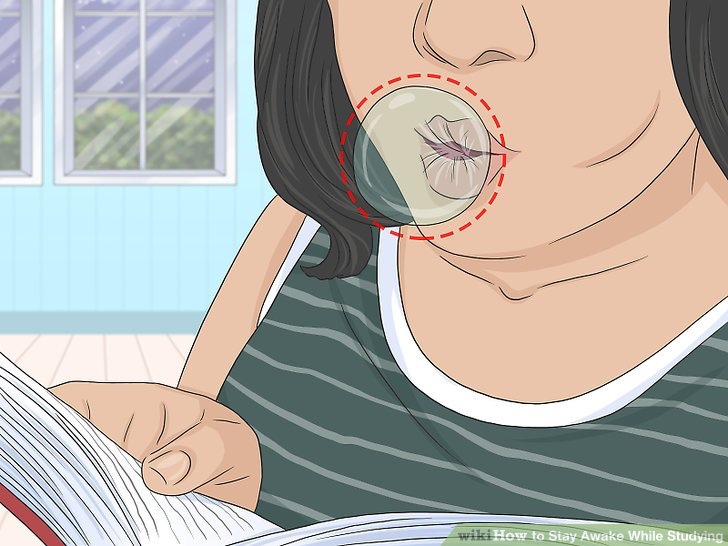
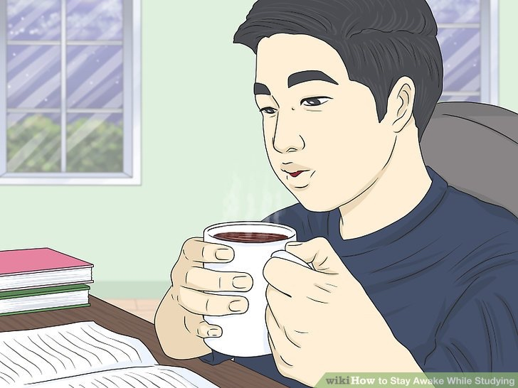

Studying can be hard work, and sometimes all that work makes you tired. But it's important to study hard if you want to be successful and get good grades in school. To stay awake while you're studying, eat healthy foods, stay hydrated, and have a small amount of caffeine if you'd like. You can also try other methods, like napping or exercising to stay alert, and create a study routine that will help you focus.
Chew mint gum to wake up your brain. Pop a piece of gum in your mouth while you study to increase blood flow to your brain and increase arousal. Pick a mint flavor, like spearmint, peppermint, or wintermint for an extra invigorating bite.

- Keep a pack of gum in your backpack or pencil case so you always have it with you when you’re studying.
Eat foods that are high in protein for longer-lasting energy. Snack on foods that are primarily composed of protein, like nuts, meat, or cheese, which fuel your body longer because they aren’t as easily digested as carbs. For example, choose trail mix, beef jerky, or string cheese to eat while you work.

- Avoid sugary foods or drinks, like cookies or soda, along with carb-heavy foods, like potato chips. These might give you a quick boost, but you’ll crash later on.
- Try to eat every 2 to 3 hours, even if it’s just something small, to avoid low blood sugar, which makes you feel sleepy.
Drink at least 8 oz (.25 L) of water every 1 to 2 hours to fight fatigue. Stay hydrated to avoid feeling drowsy or sluggish. Drink a full glass of water at least every 2 hours, which will help the blood flow in your brain and make you feel more alert.

- Keep a reusable water bottle with you that you can refill as you study.
Avoid alcohol, particularly on days when you're studying or the day before. Drinking alcohol regularly can negatively affect your brain function along with dehydrating you.
Consume a single caffeinated drink if you want an instant boost. Drink a mug of coffee to wake yourself up quickly, as caffeine prevents the cells that make you feel tired from reaching your brain. Have the equivalent of 200 mg of caffeine, which is 12 oz (.35 L) of coffee or 24 oz (.7 L) of tea, for example, over the course of 24 hours.
- Be aware that coffee and other caffeinated drinks can actually be dehydrating, so you should drink water with them, too.
- Avoid drinking coffee or consuming anything with caffeine, like chocolate, soda, or tea, within 6 hours of when you plan to go to bed or you may have trouble falling asleep.
- Don’t consume more than 200 mg of caffeine in a day. Too much caffeine can be very dangerous for your heart and can also worsen existing conditions, like anxiety or depression.
Avoid energy drinks and pills that contain caffeine and/or chemicals. While quick fixes are tempting, stay away from drinks, pills, or shots that promise instant energy or that are loaded with chemicals and too much caffeine. Be aware that they can have dangerous side effects, like increased anxiety or even heart problems.
- If you want to use energy drinks or products, talk to your doctor first. It can be very risky if you have certain health conditions, like high blood pressure or a weak heart.
Organizing Your Study Time to Stay Alert
- Study in 25-minute intervals if you like having scheduled breaks. Try what’s known as the Pomodoro technique to keep yourself on track with your studying. Set a timer to work without any distractions for 25 minutes, then take a 5-minute break. Repeat those intervals for however long you’d like to study.

- Use your 5-minute breaks to relax and recharge your brain. Do something unrelated to what you’re studying, like stretching out your body or watching a funny YouTube video.
Take a longer 30-minute break after you complete 4 intervals.
Take a 10 to 20 minute nap if you’re really tired. Lay down on the couch or get into bed if you’re at home for a quick power nap. If you’re at the library or in a classroom, rest your head on the desk in a comfortable position to doze. Set your alarm for no more than 20 minutes later so you wake up feeling refreshed instead of drowsy.

- If possible, choose a spot that’s quiet and dark to take your nap, which will help you get better quality sleep.
- Make sure you're getting at least 7 to 9 hours of sleep each night, too. Naps are a good boost but they aren't a substitute for uninterrupted sleep.
Exercise for 15 to 20 minutes on a break to get your blood flowing. Go for a short walk or jog, do some bodyweight exercises, or take a quick yoga class, for example. Move your body to wake up all of your muscles and release proteins in your brain that improve your memory.

- If you can, do your exercise outside for even more benefits. Fresh air is an instant energy boost.
Switch the topic you're studying after each break to stay focused. Instead of doing a marathon study session of 1 topic, break your study time up and change the topic after each break so you don't burn out on 1 subject. For example, study calculus for the first hour, then switch to physics.

- If you're only studying for 1 class, like English, change the specific material you're reviewing if possible. For instance, start with Shakespeare, then move to Chaucer.
Creating the Right Environment
Listen to upbeat music to distract your brain from feeling fatigued. Turn on the radio or play music from your phone or computer while you study to keep you alert. Choose songs that are fast-paced or lively, like pop or dance music, rather than slow, sad songs, which will bring down your mood and energy.

- If you’re in a public place, use headphones to listen to the music of your choice.
- Look for upbeat playlists online or on a music app. You can also find premade playlists with music specifically for studying.
Turn on bright lights if you’re studying late at night. Rather than reading by a dim lamp or in a dark room, brighten up your study area to trick your brain into thinking it’s still daytime and making it feel more energized. Turn on as many lights as possible in the room, including overhead lights and lamps.
- If your space doesn’t have much lighting, relocate to a brighter area, if possible.
- Turn up the brightness on your computer or tablet if you’re using one. This also prevents you from having to strain your eyes to see, which can make you feel more tired.
Eliminate all outside distractions if you have trouble concentrating. Figure out what’s preventing you from being able to focus, whether it’s the Instagram alerts on your phone or the people talking at the table next to you. Then, eliminate those things so your brain isn’t distracted from studying. For instance, put your phone on silent or move to a quieter area.

- You can also turn your phone off, leave it in a different room, or put it on Do Not Disturb mode so you don’t receive any texts or notifications.
Change your study spot every day to boost your memory. Rather than always studying in the same place, switch it up every time to improve your concentration and help your brain remember information better. For instance, one day, study at a coffee shop, then the next day, study at home in the kitchen.
- Choose locations that fit your studying style and personality. For example, if you study best in silence, pick a library or quiet room, whereas is you prefer background noise, opt for a cafe or common area.
Organize a study group if you get tired of working alone. Because studying can be boring and monotonous, get some friends or classmates together to study as a group. Work on practice problems out loud, discuss different topics or quiz each other to make studying more lively and engaging.
- Keep your study group to 4 to 6 people. Too many people can become distracting or difficult to manage.
- Stay on task by setting group goals for each study session, like finishing 2 chapters of a textbook or covering 1 topic. Otherwise, it may be tempting to just waste time talking or goofing off.